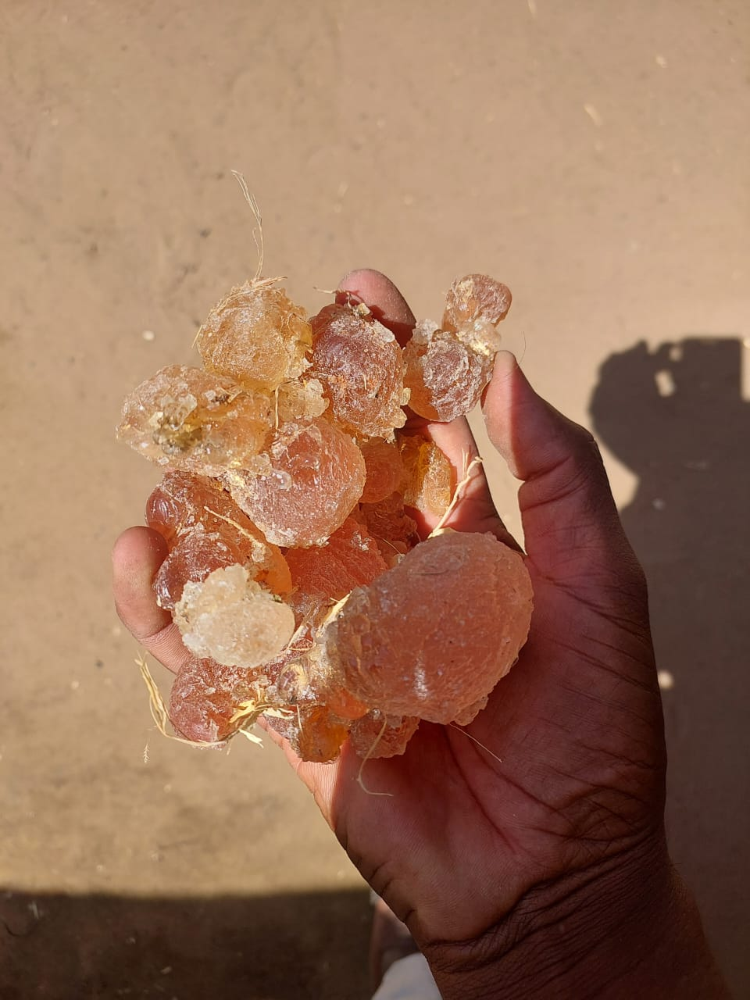

Sésame blanc

Graines de sésame blanc de qualité supérieure, soigneusement nettoyées et triées par couleur. Notre produit le plus exporté vers l’Asie et le Moyen-Orient.
En savoir plusSésame rouge

Riche en huile et au goût terreux, notre sésame brun est récolté dans des fermes locales et transformé avec précision.
En savoir plusSésame mélangé

Un mélange équilibré de sésame blanc et brun pour les clients recherchant des mélanges personnalisés. Nettoyé et calibré selon des normes élevées.
En savoir plusArachides

Arachides cultivées localement, triées par taille et par qualité. Parfaites pour l’extraction d’huile et la production de snacks.
En savoir plusLa gomme Hashab
Gomme arabique naturelle de qualité premium, soigneusement récoltée sur des acacias senegal. Réputée pour sa qualité supérieure, sa pureté et sa solubilité — largement utilisée dans l’alimentation, les boissons et la pharmacie.
En savoir plusLa gomme de Boswellia

Gomme de Boswellia de qualité premium, soigneusement récoltée sur des arbres de Boswellia naturels. Très appréciée pour son parfum aromatique, ses bienfaits médicinaux traditionnels et son utilisation dans l’encens, la cosmétique et les remèdes à base de plantes. Exportée selon des normes strictes pour répondre à la demande internationale.
En savoir plus